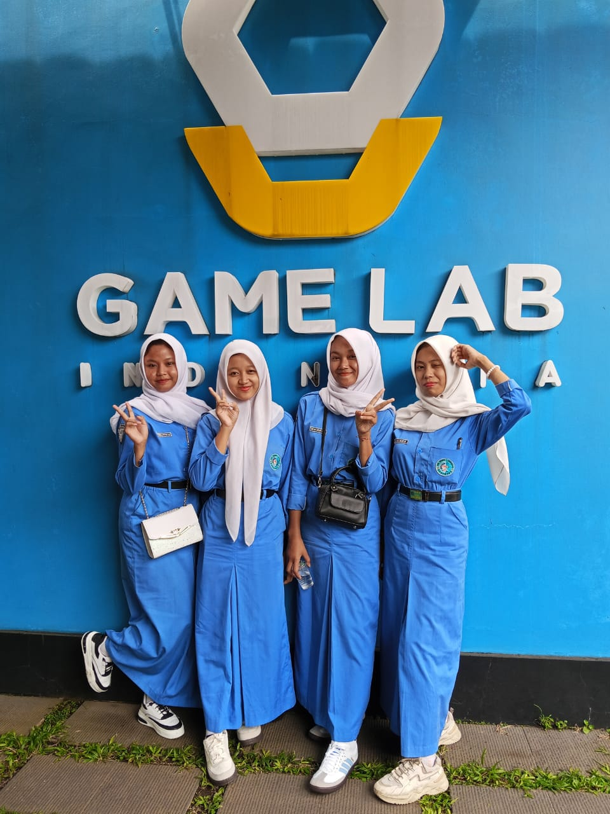

Aurina.
Aurina.
Aurina.
Aurina.
Menggabungkan logika pemrograman berstruktur dengan rasa estetika modern-klasik untuk menghadirkan antarmuka web yang anggun, intuitif, dan responsif.
Siswi SMK Negeri 1 Jenangan Ponorogo dengan konsentrasi keahlian Rekayasa Perangkat Lunak (RPL). Memiliki ketertarikan pada dunia teknologi dan pengembangan aplikasi, serta terus belajar dan mengembangkan kemampuan dalam menciptakan solusi digital yang terstruktur, fungsional, dan bermanfaat.
“Belajar dari setiap proses, berani mencoba hal baru, dan terus berkembang melalui setiap karya.”
Konsentrasi Keahlian Rekayasa Perangkat Lunak (RPL).
Menyelesaikan pendidikan dasar lanjutan.
Dinas Kesehatan Kabupaten Ponorogo. Mendapatkan pengalaman dalam dunia kerja serta terlibat dalam pengembangan dan pengelolaan sistem informasi berbasis web.
Merancang dan mengembangkan website toko rajut dinamis dengan menerapkan teknologi web modern dan database.
Mengikuti kompetisi tingkat SMP/MTs sederajat sebagai pengalaman dalam mengembangkan kemampuan dan keberanian untuk berkompetisi.
Website toko rajut yang dikembangkan sebagai mini project dengan tampilan warm dan clean. Dilengkapi dengan katalog produk, pencarian, keranjang belanja, checkout, serta dashboard administrasi untuk mengelola produk dan kategori.
Buka Website Toko RajutTelah melaksanakan Praktik Kerja Lapangan (PKL) di Dinas Kesehatan Kabupaten Ponorogo pada 06 April 2026 – 11 September 2026.
Sebagai peserta Kunjungan Industri yang dilaksanakan pada tanggal 05 Januari 2026 di PT Educa Sisfomedia Indonesia.
Mengikuti Lomba Essay dalam Smada Social, Science, Mathematics and Sastra Competition 2023 tingkat SMP/MTs sederajat.
 Praktik Kerja Lapangan
Praktik Kerja Lapangan
Dokumentasi pengerjaan dan pengelolaan sistem informasi web selama masa PKL di Dinas Kesehatan Ponorogo.

Kunjungan IndustriDokumentasi orientasi alur kerja pengembang software dan budaya kerja industri edutech di PT Educa Sisfomedia Indonesia.
Pengalaman melaksanakan Praktik Kerja Lapangan di Dinas Kesehatan Kabupaten Ponorogo, mulai dari beradaptasi dengan lingkungan kerja, mempelajari proses kerja, hingga menerapkan kemampuan di bidang Rekayasa Perangkat Lunak.